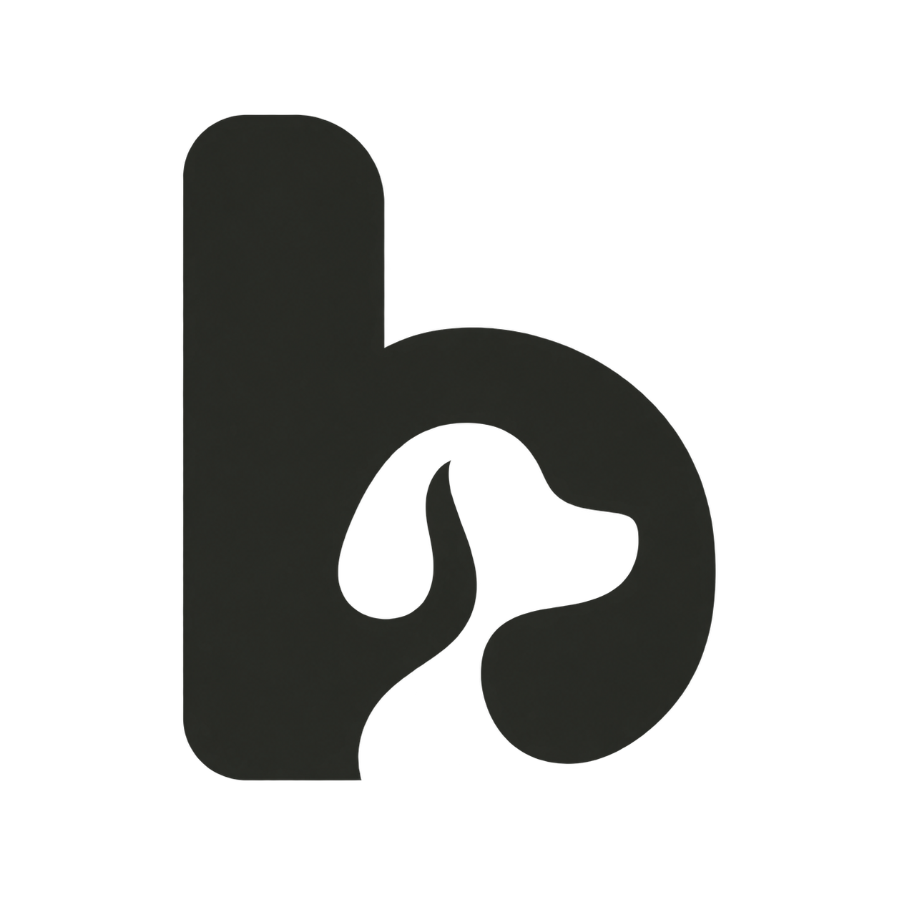
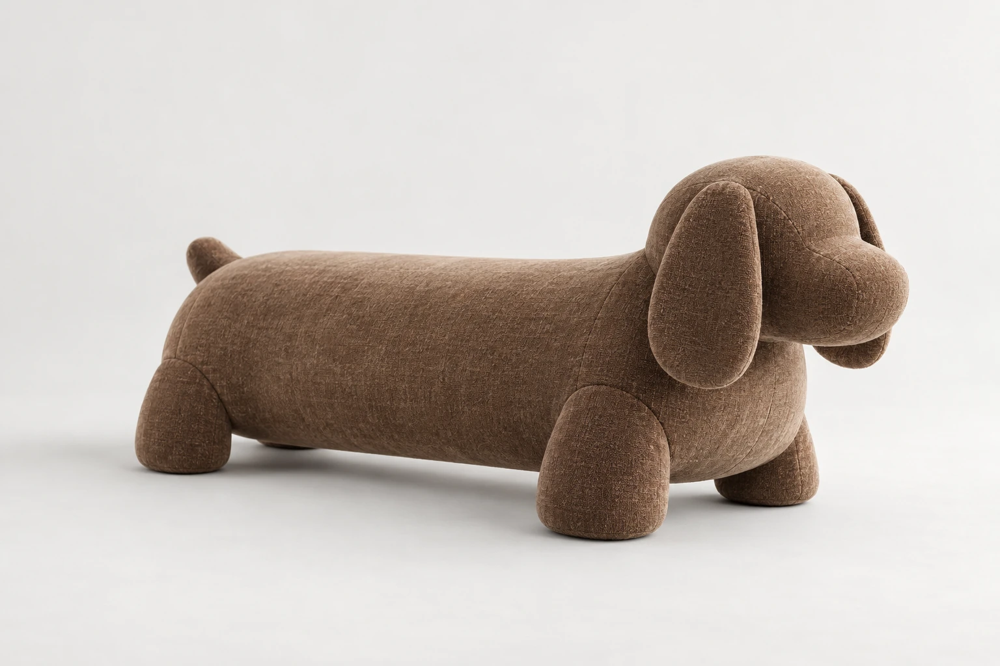
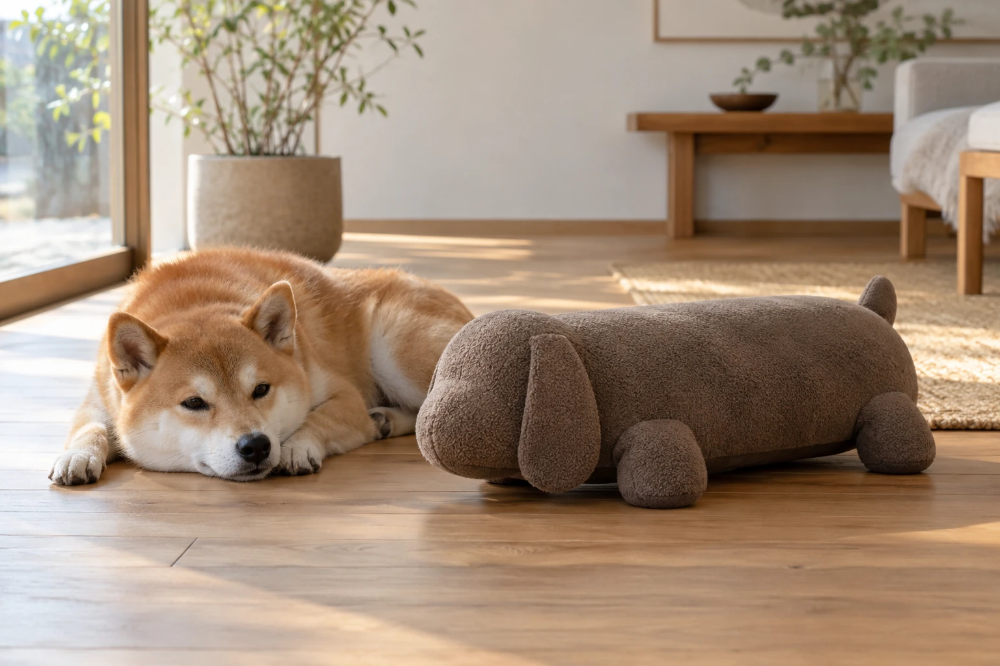

先认识，再互动。
让狗狗自己闻嗅、接近。不强迫它靠近，也不要求它立刻学会使用。

bando伴度
从理解开始
我们关心的，是这两者如何更好地相处。
从它接触的轮廓，到你每次的维护，
都值得被认真考虑。
围绕接触、支撑与维护，探索伴度的三处设计。
保留犬形轮廓，继续优化眼鼻、耳尾等容易被咬住的突出部位。外套朝可拆洗、损坏后单独更换的方向开发。
将身体承托与外层包覆分开考虑。高度、稳固程度与适用体型，将通过样品测试确认；四足造型不等于已经验证的支撑能力。
每次用后，接触组件整件丢弃；下一次换用全新组件。主体与连接处仍需检查和维护，具体结构与清洁方式正在验证。
产品处于设计与打样阶段。图为外观示意，未展示内部接触组件；耳鼻、支撑与连接结构仍待优化。

不过分打扰，不过度装饰。
以柔和的形态，留在日常的角落。
相处指南
玩具是日常照护的一部分。
观察它的感受，始终比催促更重要。
让狗狗自己闻嗅、接近。不强迫它靠近，也不要求它立刻学会使用。
初次互动时在旁观察。出现抗拒、过度啃咬或部件松脱时，及时停止。
弃置整个接触组件，检查主体与连接处是否沾污、磨损或松动。一次性组件不代表主体无需清洁，具体方式以正式说明为准。
把重要的事，说明白。
伴度是一款面向犬只骑跨行为的模块化玩具设计：主体保留，接触组件每次使用后整件丢弃。它不是医疗器械，也不以治疗或改善行为作为效果承诺。
当前方案中，主体和连接座重复使用，仍需检查并按说明清洁；外套朝可拆洗、损坏后单独更换的方向开发。接触组件每次使用后整件丢弃，不清洗复用。材料、固定方式和维护流程仍在验证。
不一定。骑跨也可能与玩耍、兴奋或压力有关，不能只凭一个动作判断原因。观察它在什么情境下发生，更有帮助。阅读 UC Davis 兽医学院的解释
不会有一款玩具适合所有狗狗。体型、习惯、啃咬方式与接受程度都需要考虑。伴度的适用尺寸尚在验证，请等待正式规格，避免仅按品种或体重做选择。
不能。玩具不能代替日常陪伴、行为训练或医疗照护。如果骑跨频繁到影响生活，或伴随反复舔咬身体等异常，应咨询兽医。查看 ASPCA 的行为说明
产品仍在设计与打样阶段，尚未开放购买。售价、适用尺寸与具体维护方式，将在样品验证后公布。
理解本能，也珍惜陪伴。